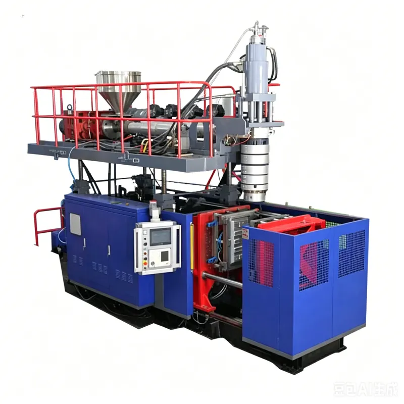
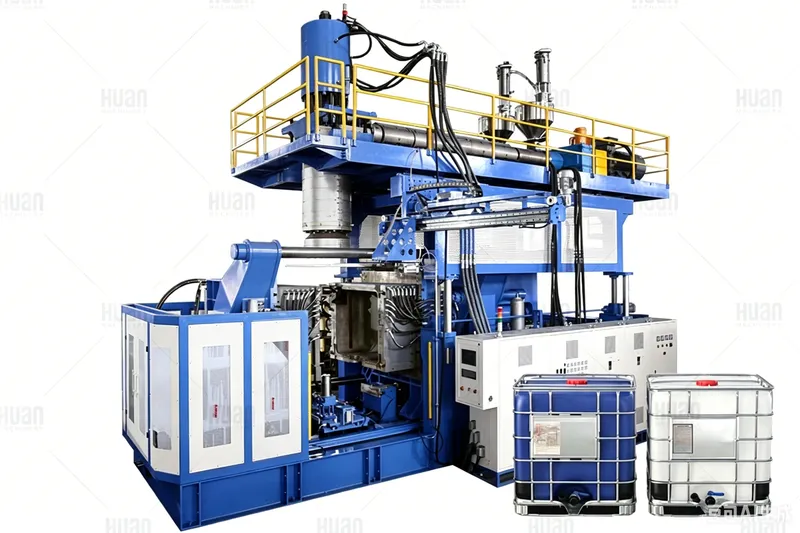
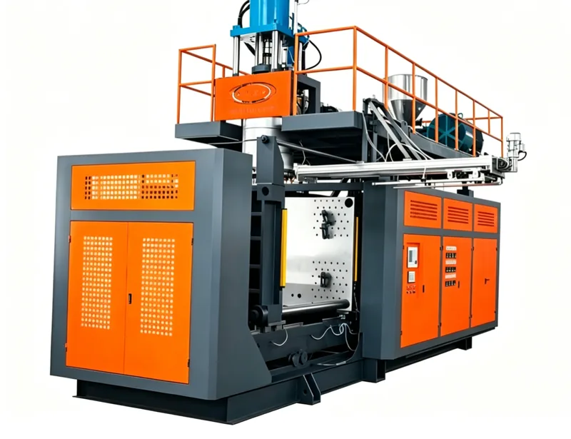
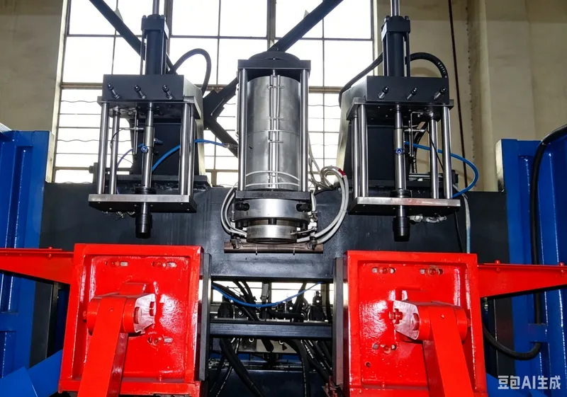

拥有覆盖全流程的先进吹塑生产线，从研发到量产，以精密装备确保卓越品质
配备国际先进的大型中空吹塑机、多层共挤设备、五轴CNC加工中心及全自动后处理产线。从模具开发到成品检测，每一道工序都经过严格把控。

可成型最大2000L的超大型中空制品，满足工业级生产需求。全伺服驱动系统确保每一次成型都达到最高精度标准。

6层共挤技术实现多层材料完美复合，EVOH高阻隔层有效延长产品保质期。智能PID温控系统确保每层材料在最佳温度下成型。

自建模具工厂配备五轴CNC，满足复杂曲面的高精度加工需求。从模具设计到成品验证全部自主完成，大幅缩短产品开发周期。

机器人去飞边+火焰处理+AI视觉检测+自动分拣的全流程自动化。自动化率超过95%，一次良品率达到99.8%。
可成型最大2000L的超大型中空产品，满足工业级需求。
6层共挤技术，EVOH高阻隔，满足食品级包装需求。
五轴CNC自建模具工厂，微米级精度，快速开发验证。
全流程机器人+AI视觉，自动化率95%，良品率99.8%。
从来料到出货的每一个环节都经过严格把控
所有原材料入库前必须通过力学性能、热稳定性和环保标准的全项检测。
温度、压力、冷却时间等关键参数实时监控，异常即时报警调整。
100%外观检查和抽样力学测试，确保每一件产品符合客户标准。
预约工厂参观，了解我们如何通过精密装备和严格品控，为您打造完美的吹塑产品。